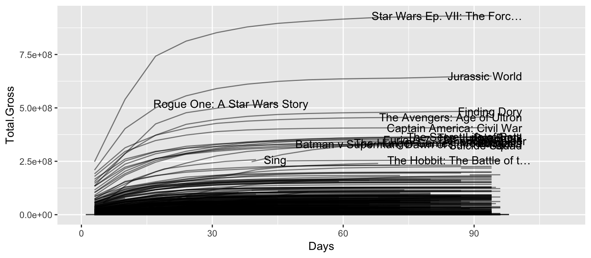

Heike Hofmann
The data set movies consists of movies in theaters for the last two years.
movies <- read.csv("../data/movies.csv")
head(movies)## Date Rank Rank.Last.Week Days Movie
## 1 2017-01-27 1 1 10 Split
## 2 2017-01-27 2 NA 3 A Dog’s Purpose
## 3 2017-01-27 3 3 36 Hidden Figures
## 4 2017-01-27 4 NA 3 Resident Evil: The Final Ch…
## 5 2017-01-27 5 5 52 La La Land
## 6 2017-01-27 6 2 10 xXx: Return of Xander Cage
## Distributor Gross Change Total.Gross Release Theaters
## 1 Universal 25655440 -35.87899 77385530 2017-01-17 3199
## 2 Universal 18222810 NA 18222810 2017-01-24 3059
## 3 20th Century Fox 14003275 -10.92974 104024969 2016-12-22 3351
## 4 Sony Pictures 13601682 NA 13601682 2017-01-24 3104
## 5 Lionsgate 12233928 45.16532 106693300 2016-12-06 3136
## 6 Paramount Pictures 8601858 -57.26877 33839608 2017-01-17 3651
## Per.Theater
## 1 8019.831
## 2 5957.113
## 3 4178.835
## 4 4381.985
## 5 3901.125
## 6 2356.028Using tools from dplyr and ggplot2 answer the follwoing questions:
Deliverable: Submit a write-up containing code, plot, and description in form of an RMarkdown file to Blackboard.
Measure of success: Total gross - which means that recently released movies are biased against because they just didn’t have enough time yet to accumulate a lot of total gross.
movies %>% group_by(Movie, Release) %>% summarize(
final = max(Total.Gross),
date = Date[which.max(Total.Gross)]
) %>% arrange(desc(final))## Source: local data frame [1,387 x 4]
## Groups: Movie [1,386]
##
## Movie Release final date
## <fctr> <fctr> <int> <fctr>
## 1 Star Wars Ep. VII: The Forc… 2015-12-15 936658640 2016-05-27
## 2 Jurassic World 2015-06-09 652177270 2015-11-13
## 3 Rogue One: A Star Wars Story 2016-12-13 520200086 2017-01-27
## 4 Finding Dory 2016-06-14 486292984 2016-12-02
## 5 The Avengers: Age of Ultron 2015-04-28 458991599 2015-10-02
## 6 Captain America: Civil War 2016-05-03 408080554 2016-09-16
## 7 The Secret Life of Pets 2016-07-05 368305960 2016-12-23
## 8 The Jungle Book 2016-04-12 363995937 2016-09-23
## 9 Deadpool 2016-02-09 363063801 2016-06-10
## 10 Inside Out 2015-06-16 356454367 2015-12-04
## # ... with 1,377 more rowsWe could also use boxoffice gross over the opening weekend to measure success. This gives a slightly different set of most successful movies - maybe the ones with the most promise or the most loyal fans:
movies %>% filter (Days <=5) %>% group_by(Movie, Release) %>% summarize(
gross = sum(Gross, na.rm=TRUE),
date = Date[1]
) %>% arrange(desc(gross))## Source: local data frame [1,139 x 4]
## Groups: Movie [1,138]
##
## Movie Release gross date
## <fctr> <fctr> <dbl> <fctr>
## 1 Star Wars Ep. VII: The Forc… 2015-12-15 247966675 2015-12-18
## 2 Jurassic World 2015-06-09 208806270 2015-06-12
## 3 The Avengers: Age of Ultron 2015-04-28 191271109 2015-05-01
## 4 Captain America: Civil War 2016-05-03 179139142 2016-05-06
## 5 Batman v Superman: Dawn of … 2016-03-22 166007347 2016-03-25
## 6 Rogue One: A Star Wars Story 2016-12-13 155081681 2016-12-16
## 7 Furious 7 2015-03-31 147163560 2015-04-03
## 8 Finding Dory 2016-06-14 135060273 2016-06-17
## 9 Suicide Squad 2016-08-02 133682248 2016-08-05
## 10 Deadpool 2016-02-09 132434639 2016-02-12
## # ... with 1,129 more rowsThere are some movies with a really, really long time in theaters. Those are movies that are shown again and again in theaters (but most of them not at all times).
# first we exclude all of the movies that are currently in theaters:
times <- movies %>% group_by(Movie, Release) %>% summarize(
intheaters = max(Days),
lastday = Date[which.max(Days)]
) %>% filter(lastday != "2017-01-27")
times %>% ungroup() %>% summarize(mean(intheaters), median(intheaters))## # A tibble: 1 × 2
## `mean(intheaters)` `median(intheaters)`
## <dbl> <dbl>
## 1 286.9394 52times %>% arrange(desc(intheaters))## Source: local data frame [1,336 x 4]
## Groups: Movie [1,335]
##
## Movie Release intheaters lastday
## <fctr> <fctr> <int> <fctr>
## 1 The Fallen Idol 1949-11-12 24478 2016-11-18
## 2 The Third Man 1950-01-30 24035 2015-11-20
## 3 Elevator to the Gallows 1961-06-07 20281 2016-12-16
## 4 Marnie 1963-12-29 18772 2015-05-22
## 5 Band of Outsiders 1966-03-12 18409 2016-08-05
## 6 The Battle of Algiers 1967-09-17 18016 2017-01-13
## 7 The Lion in Winter 1968-10-27 17617 2017-01-20
## 8 Multiple Maniacs 1970-04-07 16929 2016-08-12
## 9 The Rocky Horror Picture Show 1975-09-23 15011 2016-10-28
## 10 The Wanderers 1979-07-10 13667 2016-12-09
## # ... with 1,326 more rowsmovies %>% filter(Days < 100) %>%
ggplot(aes(x = Days, y = Total.Gross)) +
geom_line(aes(group = interaction(Movie, Release)), alpha = 0.5) +
xlim(c(0,110)) +
geom_text(aes(x = Days+7, label=Movie),
hjust = 1,
data = movies %>% filter(Total.Gross > 2.5*10^8, Days < 100) %>%
group_by(Movie) %>% filter(Days == max(Days))) 
dplyr and ggplot2 to answer all the questions: the questions all had some solution using dplyr functionality - so look a bit closer in case you don’t see the solution right away, because that was a bit of the point for this lab: recognizing situations where we can successfully apply new functionality rather than using what we always use.